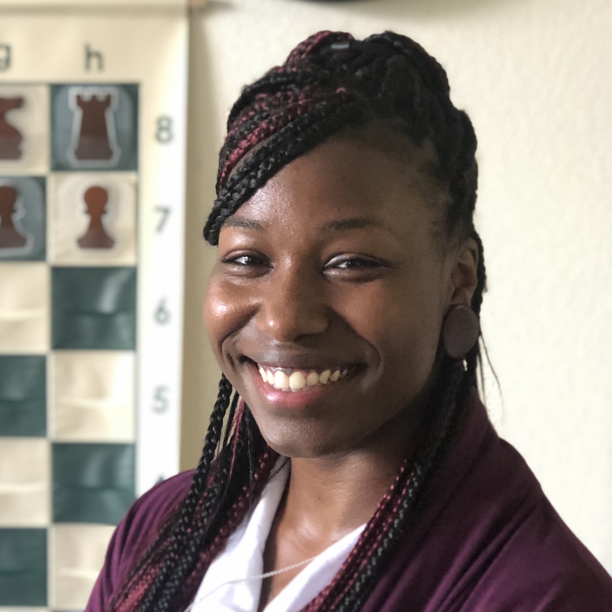

Indica Homepage
I created a webpage to showcase my unborn daughter's ultrasound images, link to our registry, and offer ways for distant family to stay connected as we welcome our baby girl!
Inspiring Quotes
Using basic HTML5 and CSS, I created an inspiring feminist quotes poster for motivation. I've since used this image in multiple applications.

About Me
As a budding web designer and developer, I create personalized websites using HTML5 and CSS; I’m training in Adobe Creative Cloud as well, and I’ve launched a Github page where I host many of my static webpage samples. I’m currently learning Responsive Web Design and adding new skills to my repertoire every day.
I’m passionate about this opportunity to bring creativity and intelligence together in this ever-evolving industry. In the same way that I’m regularly rearranging and upgrading my home to improve the feng shui (and, as a side effect, confuse my husband), I find joy in the constant updates and upgrades available in the tech industry. Creativity is a process; the work is never done.

Why Me?
I’ve always been a quick and motivated learner. Some of my other skills include piano, chess, crochet, and professional writing. I’ve also trained as a chef and worked in restaurants. I apply my curious and inspired personality to all that I do, which makes me a great team player as well as a motivated self-starter.
I’ve created this portfolio as a way to showcase my skills, to serve as a hub for my other sites and projects, and to engage with you! I’m currently for hire, and I’m accepting offers for freelance work as well as full-time work with a company that aligns with my personal quirks and aspirations. I’m an excellent communicator, and I can be reached most easily by email.
The most important driver of my success is TLI: Tiva, LezLei, and Indica. My three daughters are the reason I aim to be a role model as a mother, a woman, a person of color, and a human being. Additionally, my husband is the most supportive and inspiring person I know, and to make him proud would be a dream come true.